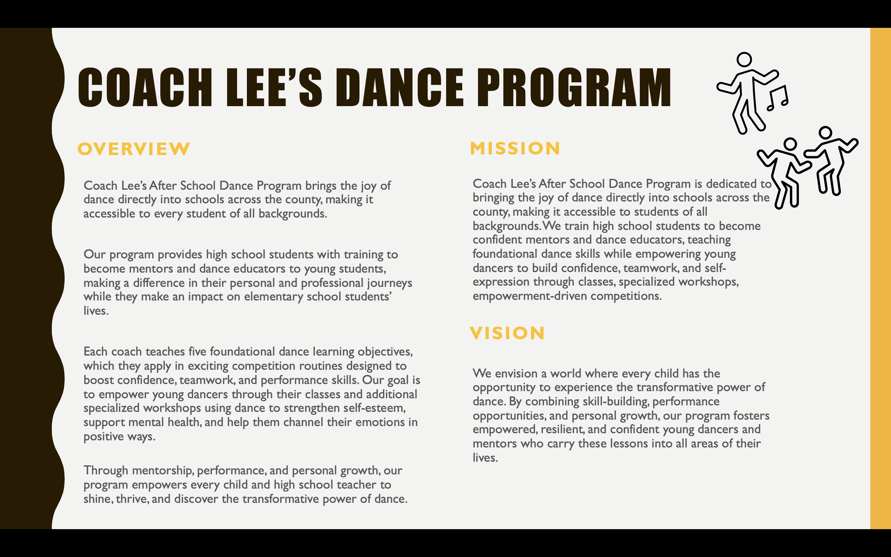
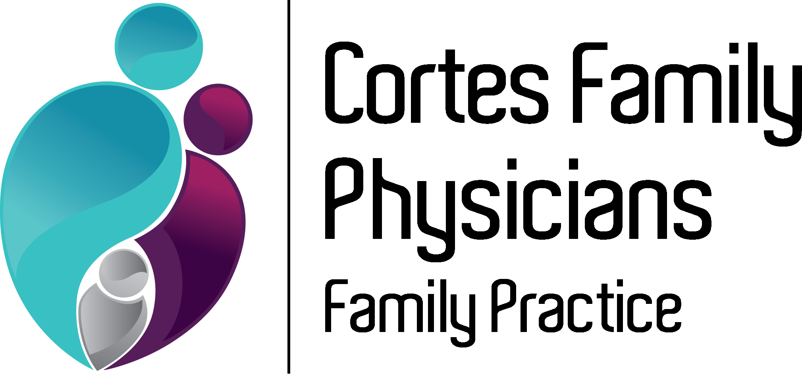
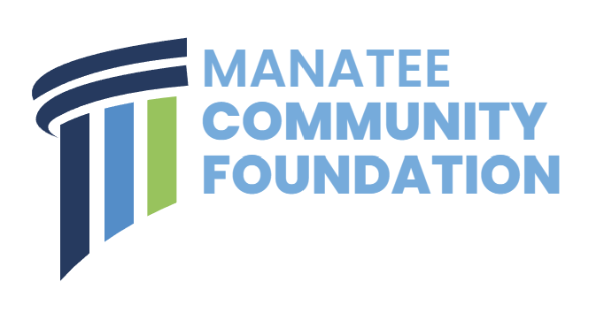

Through my consulting work with local nonprofits and social enterprises,
I help transform creative ideas into programs that make a real difference.
Below are a few examples of projects where I've turned vision into impact.
Strategic Planning

Coach Lee's Afterschool Wellness Camp
As Program Supervisor, I led the strategic transformation of a
multi-school dance program, uniting staff, students, and families
under a mission of empowerment through dance.
Conducted a program needs assessment and identified major communication and organizational challenges.
Developed a mission and vision statement.
Built a program evaluation model.
Implemented the redesigned curriculum, bringing strategic plans to life for students and staff.

Cortes Family Physicians
Partnered with one of Manatee County's few independent primary
care practices to lead a strategic marketing and rebranding
initiative, bridging the clinic's trusted legacy of
family-centered care with its forward-looking vision in
regenerative medicine.
Developed and implemented a marketing and rebranding plan to expand community reach.
Initiated community partnerships and event collaborations to strengthen visibility and engagement.
Revamped social media, creating content and videos to showcase patient stories.
Redesigned the website, writing all content and shaping the brand's visual identity.
Stepped into the role of program director and implemented a strategic
plan into a new curriculum training high school students to lead dance
classes for younger participants.
Managed weekly communication and logistics for classes and competitions, coordinating between 5 schools and more than 30 families to ensure smooth operations and performance readiness.
Directed the artistic and logistical flow of the competition, including choreography for the opener and finale, cue calling, program, award coordination, empowerment workshop and post-performance interviews.
Conducted post-program evaluations and feedback analysis.
Following two years as a Teen Health Educator volunteer, during
which I raised $3,000 for teen health initiatives in marginalized
communities, I took on a leadership role to elevate and expand the
program's curriculum.
Co-created a comprehensive curriculum blending physical, emotional, and mental health education.
Introduced a new module, “Considering Yourself,” promoting consent, self-worth, and emotional resilience.
Expanded existing lessons on contraception and STDs to include mental health and peer pressure awareness.
Served as Site Coordinator, leading and managing the team to present and facilitate lessons that inspired open dialogue and youth empowerment.
Developed a culturally grounded curriculum using indigenous art
and healing practices to support youth and community resilience
after 11 adolescent suicides in 2023.
Fundraising
Sembrando Arte, Cosechando Esperanzas
Raised $1,500 to fund the first cohort of program development
through a full-scale fundraising campaign.
Organized a traditional Colombian Christmas show in partnership with local artists.
Collaborated with 10 restaurants to provide food for sales and three businesses plus a local soccer team for auctions.
Launched a GoFundMe campaign with an organizational video along with an acai bowl fundraiser.

Manatee Community Foundation Grants Committee
Served on a select grant review committee in Manatee County, helping direct significant
funding to local nonprofits and gaining practical knowledge of what strengthens a winning
grant application.

{kind=link}